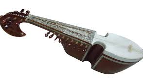
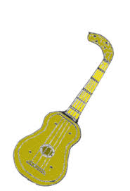

Er zijn verschillende theorieën over het ontstaan van de gitaar, die wij nu kennen. De een beweert dat de gitaar afstamt van de kithara en de ander beweert dat het is ontstaan uit een lier. Sommige mensen geloven zelfs dat er een combinatie van beide theorieën heeft plaats gevonden. Omdat het vrij vaag is en er niet heel veel bronnen over te vinden zijn, citeer ik de tekst gevonden bij dit onderwerp van Wikipedia .
De voorganger van de gitaar was de kithara (gitara), een instrument dat gebruikt werd bij de oude Grieken. Hoe dat instrument in Spanje is geraakt is niet duidelijk. Mogelijk is een luit uit Mesopotamië naar dit land gebracht door de Moren, of een Romeinse citer, waar men dan een hals zou op hebben aangebracht. Het was geen gitaar zoals we ze nu kennen, maar ze had er wel zeer veel van weg. Het succes van zowel de Spaanse Vihuela da mano, zeskorig (zes dubbele snaren), als de Italiaanse renaissancegitaar, vierkorig (vier dubbele snaren), heeft bijgedragen tot de ontwikkeling van de guitarra española. Deze rijkelijk versierde en met vijf dubbele snaren bespannen barokgitaar is ontstaan in Spanje op het einde van de zestiende eeuw. Rond 1780 werd er nog een zesde paar snaren toegevoegd aan de guitarra española. De meeste zeskorige gitaren in Spanje werden gebouwd in Cádiz. Bijna gelijktijdig werden de zes koren ontdubbeld, eerst in Frankrijk en Italië, Spanje volgde pas veel later. Ook de snaarspanning werd verhoogd. Dit werd dan de zessnarige “romantische gitaar” genoemd, met haar typische snorvormige kam. In de negentiende eeuw werden er mechanische stemschroeven aan toegevoegd, en rond 1884 bouwde Antonio de Torres Jurado de eerste gitaar die qua vorm en bouwprincipes maar weinig meer verschilde van de 'klassieke gitaar' zoals wij die vandaag kennen. Niet alleen in Spanje maar in de meeste West-Europese landen werd dit instrument bespeeld in aristocratische kringen waar het overigens meer gewaardeerd werd dan in Spanje zelf. Gitaristen zoals Robert de Visée en Francesco Corbetta waren vast verbonden aan het hof van Lodewijk XIV. Hun muziekbundels werden opgedragen aan de koning die, evenals zijn dochters, ook zelf een fervent gitaarspeler was.
Op een andere website genaamd Guitar Insite heb ik een iets uitgebreidere geschiedenis gevonden.
Hoewel de voorlopers van de gitaar al duizenden jaren bekend zijn, staat het vast dat blaas- en slaginstrumenten veel ouder zijn dan snaarinstrumenten. Maar even als voor andere muziekinstrumenten steunt ook de ontwikkeling van de gitaar op een essentieel karaktertrek van de mens: het verlangen om gevoelens te uiten die op geen andere wijze uit te drukken zijn. De gitaar is een chordofoon instrument. Chordofoon wil zeggen dat het geluid wordt voortgebracht met behulp van de trillingen van een snaar. De benaming is samengesteld uit het griekse woord "chordae" wat snaar betekent en foon, (klank/geluid).
Alexander de Grote had rond 385 v.Chr, vrijwel de gehele beschaafde wereld veroverd. Zijn rijk bevatte ook Perzië, Egypte en Griekenland, hierdoor vond er een cultuur overdracht plaats tussen deze volkeren. De Assyrische citer werd doorgegeven aan de Grieken en later weer aan de Romeinen, die dit instrument Cithara romana noemden. Instrumentbouwers in Zuid-Frankrijk, zouden duizend jaar later er een nek en toets aan toevoegen en noemden hun instrument Chrotta. Omstreeks 100-200 na Chr., dook in Rome slechts kort de luit op, om na de verwoesting van het Romeinse rijk weer voor eeuwen te verdwijnen.
De citer en de boogvormige rebab werden in de middeleeuwen veel in Spanje en Portugal bespeelt, en later in heel Europa. De rebab leek op een mandoline (peervormig) met een vlak bovenblad, twee klankgaten, een kam en een korte hals. In de twaalfde eeuw verscheen er een nieuw Spaans instrument: de Laud, die zowel in een gitaar- als peervormige vormgeving kende. Het instrument was afgeleid van de Arabische luit die bekend stond als ud welke tijdens de Moorse invasie in Spanje terecht was gekomen. De Laud werd later ook in de rest van Europa bespeelt. In Duitsland bekend als Laute, Engeland als Lute, Frankrijk als Liuth en in Nederland als Luit. Het ontwerp van de eerste gitaren leende grondbeginselen van zowel de Arabische ud als van de Franse Chrotta. Door de vele religieuze oorlogen werden veel Chrotta-spelers verdreven naar Aragon en Catalonië en daar ontstonden de kruisingen tussen Chrotta en Luit. Deze gebeurtenis is waarschijnlijk de oorzaak van het ontstaan van de gitaar.

Tijdens dezelfde periode keerde Marco Polo van zijn reizen terug naar Italië, waarbij hij een collectie gitaren en luiten meebracht uit Indië en China. In de dertiende eeuw verbood de Spaanse kerk de rebab die het als een duivels instrument beschouwde. Bij de gewone man was de rebab echter het meest favoriete instrument en negeerde ook het kerkelijk verbod van het muziekinstrument. Tot aan de zestiende eeuw onderging de rebab kleine veranderingen en het instrument werd later bekend als de mandola die vooral in Spanje populair was.
Instrumentbouwers experimenteerden met geluid, geluidsprojecties en houtsoorten en vormen. Het ontwerpconcept van de vlakke achterkant kwam weer in de mode, wat resulteerde in de vihuela, een directe voorloper van de moderne gitaar. De naam stamt van de Romeinse term fidula. Het instrument leek op de huidige gitaar, was ovaal, had vijf klankgaten in het bovenblad, had een korte hals met tien frets, vijf paar snaren plus één enkele resonantiesnaar. Net als bij de tegenwoordige twaalfsnarige gitaar waren de paren snaren gelijk of één octaaf hoger gestemd. Er waren variaties in de modellen, je had ze ook met vier of zeven paar snaren. De rijk versierde vihuela was erg duur, daarom verkoos de gewone man de viersnarige Chitarra latina, die erg op de vihuela leek maar eenvoudiger was. De Chitarra latina stamt uit het einde van de dertiende eeuw en had acht klankgaten in de vorm van twee maal vier cirkels.

In het begin van de zestiende eeuw werd aan de Chitarra latina een vijfde snaar toegevoegd. Deze nieuwe versie kennen wij tegenwoordig als Spaanse gitaar. Al gauw dook deze vijfsnarige gitaar overal op en verdrong langzaam de ingewikkelder luit. De luitliefhebbers veroordeelden de gitaar en probeerden haar een slechte naam te bezorgen door de gitaar te associëren met onzedelijke lichaamsbewegingen en moreel verderf. Het was vroeger dus niet anders dan nu, wanneer een instrument een innovatie ondergaat. Ook in de jaren vijftig en zestig, toen de elektrische gitaar aan grote populariteit won werd het instrument in de ban gedaan door zedenpredikers. En ook voor nu geldt als toen, hoe meer de gitaar met dit soort zaken werd vergeleken, des te dominanter werd haar positie in de Europese volksmuziek. Romantische lieden brachten serenades op aan dames die dat graag mochten horen. Zo ook nu dames, en heren, in zwijm vallen bij hun favoriete artiesten. De Franse en Italiaanse gitaren van de zeventiende eeuw kregen een steeds slankere taille, en had bijna al de vorm van de gitaar zoals wij die nu kennen. Een belangrijk verschil was echter nog wel de vijf paar snaren, in plaats van de zes of twaalf van de huidige gitaar.
De Carulli-gitaar uit 1810 was één van de eerste met zes snaren die net zo gestemd waren als de huidige: E A D G B E. Men ging over van dubbele naar enkele snaren. Hierdoor werden ook de stemproblemen opgelost die ontstonden doordat de paren snaren van darmen, niet van gelijke diameter waren.Één van de meest invloedrijke gitaarbouwers uit die tijd was Antonio Torres Jurado uit Almeria in Spanje.
Hij leverde een belangrijke bijdrage in de ontwikkeling door de mensuurlengte te vergroten tot 65 centimeter. Ook maakte hij de hals 5 centimeter smaller en vervaardigde een breedere klankkast, waardoor het instrument meer volume kreeg. Hij gebruikte als één van de eersten mechanische stemmechanismen en verbreedde de steunbalkjes waardoor de snaren op de body iets wijder uit elkaar komen te liggen. De moderne klassieke gitaar is sindsdien weinig meer veranderd, één van de laatste innovaties was midden jaren veertig van de vorige eeuw. De snaren, die tot dan toe nog van varkensdarmen waren vervaardigd, werden vervangen door nylon. Een uitvinding uit 1935 van de Amerikaanse chemicus Wallace Hume Carothers.
De gitaar werd een steeds populairder instrument en er werden meer muziekstukken geschreven. Onder andere Rossini, Haydn, Berlioz en Schubert componeerden voor de gitaar.